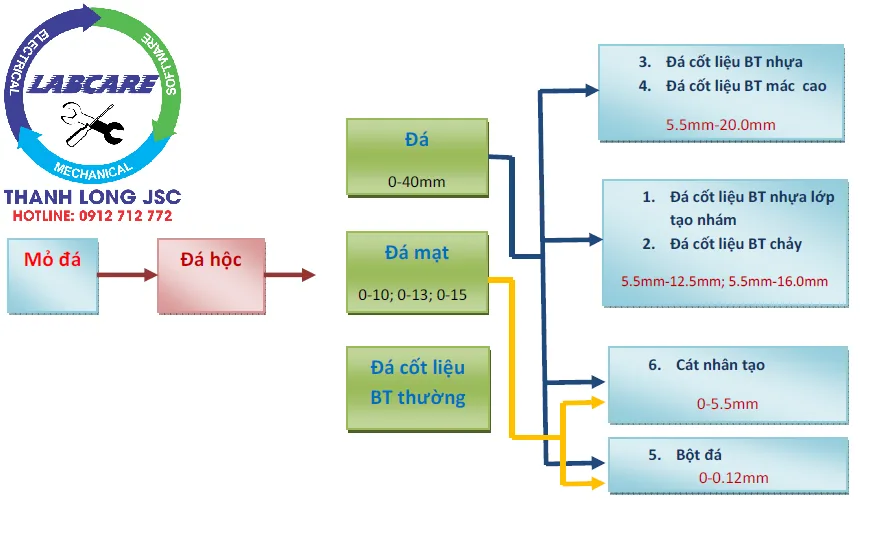

Máy nghiền cát (VSI) là máy nghiền cát ly tâm trục đứng, hay còn gọi là côn cát, máy xay cát, máy làm cát một trong những dòng sản phẩm mà không thể thiếu trong ngành xây dựng như bê tông, cốt liệu, bê tông đầm lăn, VLXD, ... Sử dụng theo nguyên lý “đá va đá” tốc độ rotor để tạo ra sự va đập tác động vào hạt có độ cứng bằng nhau va chạm với chính nó để tạo ra hạt cát giống cát tự nhiên nhất. Các hạt sỏi, đá, vật liệu có độ cứng tương đương với nhau. Khi va chạm sẽ bị vỡ ra thành nhiều mảnh tại những vị trí yếu và các cạnh dễ vỡ.
Hành động nghiền tự sinh này làm cho chi phí sản xuất mỗi tấn đầu ra của sản phẩm là thấp nhất. Giảm thiểu các chi phí vật tư, chi phí bảo trì bảo dưỡng.
Cùng tìm hiểu kỹ hơn về công nghệ tiên tiến đứng nhất thế giới này nhé. Bạn sẽ ngạc nhiên đấy.

Tính năng, đặc điểm của máy nghiền cát VSI
Trong khi hầu hết các loại máy nghiền côn, máy nghiền búa, máy nghiền phản kích. Sử dụng các bộ phận kim loại để nghiền nát đá. Máy nghiền cát VSI sử dụng đá có kích thước lớn được đưa vào máy nghiền cát, tạo ra sự va đập mạnh với chính nó, để nghiền nát chính nó. Hành động nghiền tự sinh này, làm cho chi phí sản xuất mỗi tấn đầu ra của sản phẩm là thấp nhất. Sự va đập tốc cao tốc nhờ tốc độ quay của Rotor, giúp máy nghiền cát VSI cải thiện hình dạng của vật liệu làm cho các viên đá, sỏi được đưa vào bị mài hết các cạnh sắc và thoi dẹt. Kết quả là sản phẩm ra có biên dạng và hình thù rất tròn, nhẵn. Còn cát nghiền thì có độ mịn và tròn tương tự như 100 % cát tự nhiên
Nguyên lý hoạt động máy nghiền cát VSI
Hiện nay, trên thế giới đang áp dụng cát nhân tạo rất phổ biến để thay thế cho cát tự nhiên, việc sử dụng cát nghiền sẽ tạo ra một hướng đi mới trong xây dựng và mang lại nhiều lợi ích hơn hẳn so với việc dùng cát tự nhiên như cũ.
Rửa cát nghiền và phân tách hạt thô,hạt mịn sau máy nghiền cát VSI
Bảng so sánh VSI và các dòng máy VSI khác cùng công suất
Tiêu chí đánh giá |
Bảng so sánh VSI và các dòng máy VSI khác cùng công suất | |
| VSI B6150SE (100-280TH) | VSI Khác công suất 100-280TH | |
Nguyên lý hoạt động |
– Hoạt động theo nguyên lý đá va đá Tốc độ rotor được điều khiển tự động có thể thay đổi được( từ 50-85m/s )-> có thể điều chỉnh tỷ lệ cát đầu ra đến 50%-70% tuỳ loại đá. . . | – Hoạt động theo nguyên lý đá va đe kim loại.Tốc độ rotor hầu như không thay đổi được.Tỉ lệ cát ra phụ thuộc nhiều vào kết cấu cơ khí; |
| – Điều chỉnh kiểu cho ăn theo tầng/lớp -> giúp tăng tỷ lệ đá vo phục vụ cho trạm trộn bê tông, đường cao tốc nếu cần thiết | – Chỉ có 1 cách cho ăn trực tiếp thông qua rotor. | |
Kết cấu cơ khí |
– Thân máy được đúc tại xưởng đúc riêng, với sự giám sát chất lượng nghiêm ngặt.Thép được nhập từ châu âu với chất lượng cao | – Thân máy được đúc tại xưởng của bên thứ 3.Đa phần thép xuất xứ từ Trung Quốc với hàm lượng tạp chất cao. |
| – Kết cấu nhỏ gọn. 1870 x 2575 x 2189 mm, 6,371kg. Giúp việc vận chuyển và lắp đặt dễ dàng, tiết kiệm chi phí | – Kết cấu cơ khí to và rườm rà, tốn diện tích. Gia công bệ đỡ 4560 x 2450 x 2780 mm, 14,500kg | |
| – Hệ thống nâng hạ, điều chỉnh cửa cấp liệu bằng thuỷ lực. Giúp tối ưu hoá hiệu suất nghiền và điều chỉnh được tỷ lệ đầu ra sản phẩm. | – Hệ thống nâng hạ bằng tay,hầu như không điều chỉnh được tỷ lệ đầu ra sản phẩm | |
| – Tốc độ rotor từ 1500-2500 vòng/phút tỷ lệ cát cao hơn khi vòng quay rotor lớn. | – Tốc độ rotor 900-1300 vòng/phút. Một số đơn vị có thể lên tới 1500v/phút, tuy nhiên bạc đạn , vòng bi rất hay hỏng. | |
| – Thân máy được đúc tại xưởng đúc riêng, với sự giám sát chất lượng nghiêm ngặt.Thép được nhập từ châu âu với chất lượng cao | – Thân máy được đúc tại xưởng của bên thứ 3.Đa phần thép xuất xứ từ Trung Quốc với hàm lượng tạp chất cao. | |
Hệ thống giám sát cảnh báo an toàn cho thiết bị |
– Hệ thống giám sát và cảnh báo an toàn: độ rung, nhiệt độ vòng bi, trục rotor,nhiệt độ động cơ giúp tăng tuổi thọ máy. | – Không có |
| – Hệ thống điều khiển hoàn toàn tự động IC giúp tối ưu hiệu suất đầu ra,đồng thời tối thiểu điện năng tiêu thụ=> Không phụ thuộc vào trình độ và kinh nghiệm của người vận hành | – Không có, công suất đầu ra và điện năng tiêu thụphụ thuộc rất nhiều vào người vận hành chỉnh máy | |
Vật tư tiêu hao dao nghiền cát |
– Nguyên lý đá va đá, đá va vào đệm cát trong các hộc trên thân. Giúp tiết kiệm được vật tư tiêu hao.( tuổi thọ trung bình của dao cát 35,000-40,000m3/ bộ dao ) | – Tiêu tốn vật tư dao và đe – 15,000-20,000m3/ bộ khi dùng cho đá granite. |
Điện năng tiêu thụ |
– Sử dụng động cơ 110kW-150KW=> tiết kiệm điện năng tiêu thụ hàng năm Với sự cố nhỏ,hệ thống thủy lực tự nâng hạ và cảnh báo, sửa chữa rất chóng | – Sử dụng 2 động cơ 132kW = 264kW hoặc 320kW |
Vật tư thay thế |
– Khi cần đến vật tư tiêu hao thì có Kho hàng ở Bà Rịa Vũng Tàu, Đồng Nai, Bình Phước, thời gian 1 ngày. | – Phải đặt hàng từ Trung Quốc,hay đúc trong nước hoặc chế tạo phi tiêu chuẩn, sai số rất lớn,mau hư |
Dụng cụ và thiết bị bảo trì |
– Bộ dụng cụ tiêu chuẩn + thiết bị cân bằng động của rotor. Giúp người vận hành kiểm tra và cân bằng động cho rotor, giúp tăng tuổi thọ vòng bi. | – Bộ dụng cụ tiêu chuẩn. hoặc không có kèm theo |
Sách hướng dẫn vận hành |
– Sách hướng dẫn vận hành, sổ tay vật tư tiêu hao. Bản vẽ đấu nối và bảo trì máy rất chi tiết, cụ thể | – Không có/ có nhưng rất sơ sài hoặc bằng tiếng Tàu không sử dụng được |
Kỹ sư hỗ trợ lắp đặt,sự cố bảo hành |
– Đội kỹ sư và chuyên gia, sẵn sàng hỗ trợ khách hàng 24/24, lắp đặt, vận hành,bảo trì, khắc phục sự cố | – Không có, nếu có cũng không nắm được kỹ thuật. Chờ kỹ sư từ nước ngoài bay sang hỗ trợ khi xảy ra sự cố |
Xuất xứ hàng hóa |
-Phần Lan – Châu Âu – 125 năm kinh nghiệm về máy nghiền cát | – Hàng Trung Quốc/ Nhật nghĩa địa,copy công nghệ CHâu Âu |
Cát nhân tạo được sản xuất như thế nào?


Ưu điểm của máy nghiền cát VSI, doanh số bán chạy nhất hiện nay
– Cát nhân tạo được sản xuất trên dây chuyền theo tiêu chuẩn của châu Âu, không gây ô nhiễm môi trường, đảm bảo về chất lượng như cát tự nhiên.
– Giảm chi phí thi công, tạo ra những sản phẩm có chất lượng cao như kết cấu bê tông tấm lớn, bê tông MAC siêu cao khi dùng cát nhân tạo.
– Thay thế cát tự nhiên nhờ những đặc tính nổi trội như: Hạt đồng đều hơn, tỷ lệ thành phần hạt theo từng yêu cầu cấp phối nhiều loại bê tông khác nhau, không độ ẩm
– Tiết kiệm xi măng, nhựa đường, tăng tuổi thọ công trình và rút ngắn thời gian thi công. Bê tông xi-măng, bê tông Asphalt, bê tông đầm lăn, bê tông nhựa microsell và nhiều loại bê tông đặc biệt khác đều thích hợp với cát nghiền nhân tạo.
– Không gây ô nhiễm môi trường, có thể lắp đặt tại những nơi gần khu dân cư mà không tạo ra bất cứ ảnh hưởng hay tác động xấu nào.
– Phạm vi ứng dụng của công nghệ khá rộng: Sản xuất cát nhân tạo, nghiền quặng trong ngành khai thác khoáng sản, sản xuất sơn, gạch, kính và 1 số ngành công nghiệp khác.
– Giải quyết nhu cầu dùng cát trong các công trình: thủy điện Trị An, Sân bay Long Thành Đồng Nai, Lai Châu, Sơn La,đập thủy lợi Tân Mỹ, Cao tốc Mỹ Thuận, Cao tốc Bắc-Nam … đều sử dụng cát nhân tạo từ máy nghiền cát Barmac VSI.
Nhờ máy nghiền cát VSI cát nhân tạo đã được sử dụng rộng rãi trong xây dựng. Qua những thông tin trên có thể thấy cát nhân tạo sẽ trở nên phổ biến ở Việt Nam trong thời gian tới và sẽ dần thay thế cát tự nhiên, đồng thời giải quyết vấn đề thiếu cát trầm trọng sau khi ngày càng có nhiều dự án mọc lên.
Giao hàng máy nghiền cát tại Gia Lai
Với hơn 150 năm đi đầu trong lĩnh vực công nghệ nghiền sàng đá, các trạm nghiền được các chủ đầu tư lựa chọn và tin tưởng nhiều hơn những nhà sản xuất khác, bởi:
- Tiết kiệm điện từ 4000đ/ 1 khối đá đầu ra.
- Vật tư tiêu hao bền hơn 2 lần so với các nhà sản xuất khác.
- Hoạt động bền bỉ không dừng máy, chi phí sản xuất thấp
- Hệ thống báo hiệu cảnh báo áp suất, nhiệt độ, khe xả trên màn hiển thị.
- Hệ thống chống kẹt đá, phát hiện kim loại, chống quá tải được tích hợp.
Thanh Long JSC đại diện SRH tại Việt Nam chuyên cung cấp:
- Dây chuyền nghiền cát/đá cố định: Máy kẹp hàm, máy nghiền côn, sàng rung phân loại, máy nghiền cát nhân tạo VSI Barmac, …
- Dây chuyền nghiền cát/đá di động: máy kẹp hàm di động, máy nghiền côn di động, sàng rung phân loại di động, máy nghiền cát nhân tạo VSI Barmac di động,..
- Công nghệ rửa/tách:: Máy rửa cát theo module, sàng rung tách nước, máy tuyển rửa cát, máy tách cát mịn, máy thu hồi cát mịn…
- Vật tư, thiết bị phụ tùng: Dao nghiền, lưới sàng, má kẹp hàm, nón côn, …
Các dự án lớn đã lắp đặt dây chuyền tại Việt Nam:
GIAO HÀNG MÁY NGHIỀN CÁT NHÂN TẠO VSI
Cận cảnh máy nghiền đá hoạt động tại mỏ đá Việt Nam
Lắp đặt trạm nghiền đá và cát xây dựng được nhập khẩu hoàn toàn từ Phần Lan.
Khủng khiếp máy nghiền đá xây dựng lớn nhất Việt Nam
Kênh video Youtube:
Page Facebook: Công Nghệ Máy Nghiền Đá
Website: https://thegioimaynghienda.com https://labcare.com.vn/
Zalo, hotline: 0912 712 77
#bn